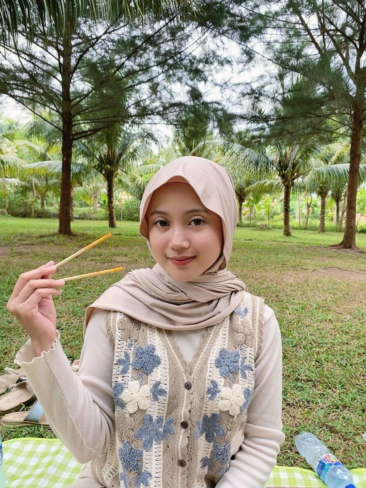

About Me ✨
|  | ||
| Nama | : | Nadya Alicia Putri |
| Nama Panggilan | : | Nadya, Nad, Nanad, Anad, Cia, Cici |
| TTL | : | Cibinong, 16 November 2005 |
| Alamat Asal | : | Kota Manna Bengkulu Selatan |
| Makanan Kesukaan | : |
|
| Hobi | : | Masak, travelling |
| Cita-cita | : | Jadi orang dalam |